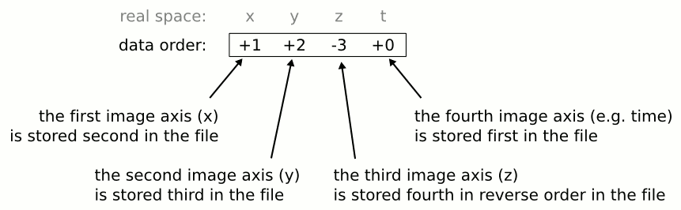

|
|
|
Image File Formats | |
|---|
This is a list of currently supported file formats. Note that some of these formats may be supported only for reading or writing.
MRtrix determines the image format from the identifier specified on the command-line (typically its suffix). Certain image formats use multiple files per data set (e.g. the Analyse *.hdr/*.img pair). For this reason, the image identifier may not correspond to a real file. Its function is to supply the program with enough information to infer which files are to be read or created. For example, the image identifier /data/image-[1:5].img instructs MRtrix applications to access a data set consisting of five Analyse format images, stored in the /data folder, with filenames image-1.img to image-5.img.
MRtrix applications are all inherently capable of accessing binary data stored in any common format (i.e. precision, byte order, etc); these data types are listed here. However, not all image formats support such a wide range of data types. With a few exceptions, most MRtrix programs will request the same data type for the output images as for the input images. The program will then attempt to use the requested data type if the image format can support it, or will otherwise substitute a hopefully appropriate replacement.
For most image file formats, it is possible to combine multiple images into a single higher-dimensional data set on the command-line by using number sequences. If the filename contains a number sequence between square brackets, the application will attempt to match the numbers specified (if any) with any existing files (when reading) or will generate files with the numbers specified (when writing). For example:
> mrconvert in-[20:40].mif out-[].img mrconvert: copying data... 100%
will convert the MRtrix format images in-20.mif through to in-40.mif (interpreted as a single data set) into the set of Analyse images out-00.img through to in-20.img.
This syntax will fail if any of the image files that match the specifier have different dimensions or data types, since it then becomes impossible to combine the images into a single coherent data set.
DICOM format is only supported for reading. MRtrix applications will assume an image is in DICOM format if the image specifier provided corresponds to a folder. The application will scan the entire folder and its subfolders for DICOM files and generate a list of DICOM patients, studies and series. If a single series is found within the folder, this data set will be accessed with no further interaction required. Otherwise, the user will be prompted to select the series of interest. Images stored as mosaics should be correctly interpreted (at least on Siemens VB13 and above).
For example, assuming the folder /data/DICOM_folder/ contains a set of DICOM images, the following command will print its corresponding header information:
> mrinfo /data/DICOM_folder/
mrinfo: scanning DICOM folder "/data/DICOM_folder/" - ok
mrinfo: reading DICOM series "t1_mpr_0.9 iso hres"... 100%
************************************************
Image: "VOLUNTEER(000366) [MR] t1_mpr_0.9 iso hres"
************************************************
Format: DICOM
Dimensions: 192 x 256 x 256
Voxel size: 0.9 x 0.898438 x 0.898438
Dimension labels: 0. inferior->superior (mm)
1. left->right (mm)
2. posterior->anterior (mm)
Data type: unsigned 16 bit integer (little endian)
Data layout: [ +2 -0 -1 ]
Data scaling: offset = 0, multiplier = 1
Comments: VOLUNTEER(000366) [MR] t1_mpr_0.9 iso hres
Transform: 0.998 -0.05412 -0.03311 -74.03
0.05409 0.9985 -0.001794 -100.6
0.03316 2.34e-08 0.9995 -125.8
0 0 0 1
A separate application, read_dicom, is provided to view all DICOM header elements within a particular DICOM file.
Note that no support is provided for reading the DICOMDIR entry due to case-sensitivity issues. DICOM data are typically stored on CD or DVD on a case-insensitive filesystem. However, Unix systems will typically not access these filesystems in a case-insensitive manner, and will fail to find the appropriate files if the case of filenames supplied in the DICOMDIR file does not match the case of the files found on the CD or DVD.
This file format is supported both for reading and writing, and allows interoperation with other packages such as SPM5 or FSL. In order to specify a NIfTI format image on the command line, simply specify the name of the file. For example:
> mrinfo example.nii
Notes:
> gunzip example.nii.gz
This file format is supported both for reading and writing. In order to specify an Analyse format image on the command line, type the name of its data file (*.img). For example:
> mrinfo example.img
will display the image header information found in the file example.hdr that corresponds to the data file example.img.
Notes:
Analyse.LeftToRight: falsein the MRtrix config file (/etc/mrtrix.conf or ~/.mrtrix.conf on Unix, C:\mrtrix.conf or $HOMEDIR\mrtrix.conf on Windows).
This is the standard image file format for MRtrix. It is supported both for reading and writing. To use it, simply type the name of the *.mif or *.mih file where appropriate in the command, for example:
> mrinfo example.mif
There are two versions of this format:
The MRtrix image format supports all the data types listed below, all data ordering schemes, and any number of dimensions. In addition, the header is capable of storing any relevant information. It is therefore the preferred image format to use with MRtrix applications.
This is the format used by the XDS package, and is supported both for reading and writing. Note that the XDS header only contains the data set dimensions; all other header information (in particular voxel size) that may have been contained in the image header will be lost when converting to this format.
In this format, image files contain a single-slice time series; multiple files will need to be combined in order to access a full volume data set. The XDS format is assumed if the image specifier ends in *.bfloat (Float32 data type) or in *.bshort (UInt16 data type). Here is a typical example:
> mrconvert original-[3,4,5].bshort converted-[].bfloat
This is the legacy image file format for MRtrix, and is now deprecated. It consists of a single file, and supports 4-dimensional data. It is currently only supported for reading.
To use it, simply type the name of the file where appropriate in the command, for example:
> mrinfo example.mri
All MRtrix applications can read or write images using any of the data types listed below. Converting an existing image into one using any desired data type can be achieved by supplying the -datatype option to mrconvert.
Any data type larger than 8 bits (i.e. one byte) can be stored according to different byte-ordering conventions. By far the most common such conventions are little-endian (found on Intel x86 platforms, including the new generation of Macs) and big-endian (found on older Macs and SUN Sparc platforms, amongst others). The desired byte order for these data types can be specified by appending the suffix LE or BE to the data type specifier. If unspecified, native byte ordering will be assumed.
| Specifier | Description |
|---|---|
| Bit | bitwise data |
| Int8 | signed 8-bit (char) integer |
| UInt8 | unsigned 8-bit (char) integer |
| Int16 | signed 16-bit (short) integer |
| UInt16 | unsigned 16-bit (short) integer |
| Int16LE | signed 16-bit (short) integer (little-endian) |
| UInt16LE | unsigned 16-bit (short) integer (little-endian) |
| Int16BE | signed 16-bit (short) integer (big-endian) |
| UInt16BE | unsigned 16-bit (short) integer (big-endian) |
| Int32 | signed 32-bit int |
| UInt32 | unsigned 32-bit int |
| Int32LE | signed 32-bit int (little-endian) |
| UInt32LE | unsigned 32-bit int (little-endian) |
| Int32BE | signed 32-bit int (big-endian) |
| UInt32BE | unsigned 32-bit int (big-endian) |
| Float32 | 32-bit floating-point |
| Float32LE | 32-bit floating-point (little-endian) |
| Float32BE | 32-bit floating-point (big-endian) |
| Float64 | 64-bit (double) floating-point |
| Float64LE | 64-bit (double) floating-point (little-endian) |
| Float64BE | 64-bit (double) floating-point (big-endian) |
Data can be stored in the image files in different orders. For example, a particular image format might specify that the bottom left posterior corner voxel is stored first in the file, and that subsequent values in the file correspond to voxels immediately to the right of the previous one. Other image formats might specify that the top right corner voxel is stored first. MRtrix applications are capable of handling all (reasonable) such data ordering schemes, as long as the image format has fully specified how the file is to be interpreted.
With MRtrix, data ordering is specified using a comma-separated list of axis specifiers, each of which consists of a plus or minus sign to indicate polarity, followed by the axis number. For example, the specifier -0,-1,+2,+3 indicates that data values are stored right to left first, then anterior to posterior, then inferior to superior and finally in increasing order along the 4th dimension (which might for example correspond to the time dimension). This type of ordering might be used for a standard DICOM axial time-series.
The interpretation of the ordering specifier is often not trivial. The illustration below should help to clarify its proper meaning. This corresponds to a data order where all the consecutive time points of a given voxel are stored together in the file. This might be useful to optimise throughput for certain applications, for example when the time-course of each voxel is analysed independently. On the first line, the image space interpretation is given for each entry (suitable for time-series data). This data order can be interpreted as saying:
Note: all data ordering specifications should be made with reference to the coordinate system convention used by MRtrix.
|
|
|
top | |
|---|